志心の会 通信
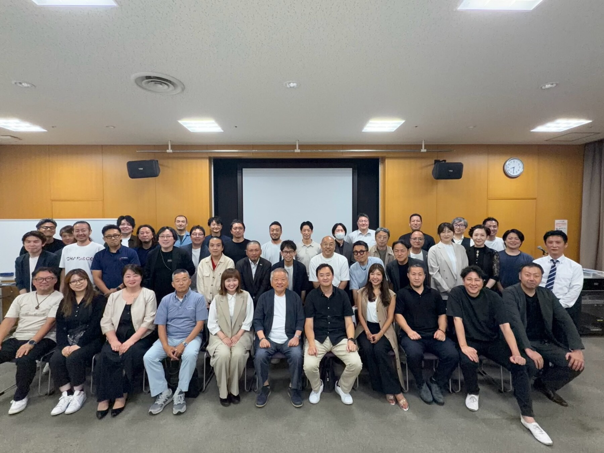
7月OB例会、盛会のうちに閉幕いたしました。
本年度も恒例の 7月OB例会 を、7月25日（土）に開催いたしました。会場には各期のOB・OGが集い、本年度より新たに 「マネゼミ出身者の実践報告」 と呼称を改めたメインプログラムに、13期・中村 薫さんと9期・橋本 佳奈さんが登壇。保育の現場から、そして経営の現場から ―― マネゼミの学びが卒業後どう生きてきたかを、おふたりご自身の言葉で語っていただきました。本号では、当日の様子をレポートいたします。
開会にあたり吉田会長より、快く登壇を引き受けたおふたりの挑戦を称える言葉と、マネゼミから少し離れているOBにも「当時の学び・志・主体性」を見つめ直す機会にしてほしいとのご挨拶がありました。
- 名 称
- 志心の会 2026年度 7月OB例会（マネゼミ出身者の実践報告）
- 開 催 日
- 2026年7月25日（土）
- 登 壇 者
- 中村 薫 さん（13期）／ 合同会社コアン 代表
橋本 佳奈 さん（9期）／ 株式会社プラマコーポレーション 代表 - 締めの言葉
- 松尾 孝 校長
- 司会進行
- 簑田 さん（13期）
- 対 象
- 志心の会会員（各期のOB・OG）
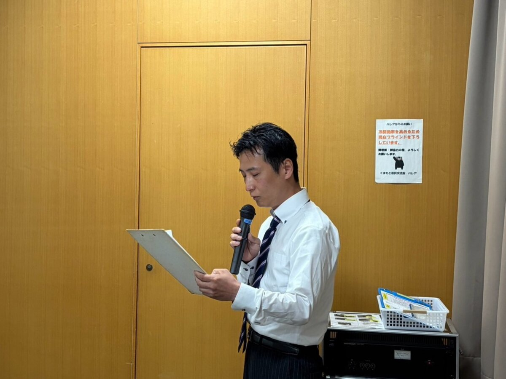
今年3月まで保育士として現場に立ち、4月に出張託児を軸とする合同会社コアンを立ち上げた中村さん。報告は、一冊の絵本『クレヨンのくろくん』の読み聞かせから始まりました。「他の色を消してしまう」と仲間から敬遠されていた黒。けれど、その黒を生かした一枚が、夜空にいくつもの花火を咲かせます。苦手や弱みに見えるものも、見方ひとつで誰かの価値になる ―― 絵本のなかにもマネジメントの本質が息づいていた、という気づきの共有でした。
中村さんが柱として挙げたのは、リフレーミング（見方を変える技術）、心理的安全性（安心して話せる場）、そしてその手段としての サークルタイム（輪になって一人ずつ語る対話） の三つ。いずれも保育の現場で磨かれ、そのまま家庭や職場にも通じるものばかりです。
印象的だったのは、「変えよう」としていたのは子どもではなく自分の見方だった、という転換の話。ある園児への関わり方を変えたところ、変わったのは本人よりも まわりの子どもたち の方だった ―― マネゼミで学んだ「変わるのは自分」が、現場の実感として腑に落ちた瞬間だったといいます。
会場では、六つのキーワードを前向きに言い換える「リフレーミング」の実践や、隣の人と一つのテーマを語り合う「サークルタイム」も。自信をなくしていた園児が、朝ごはんの小さな一言から仲間の憧れになり、やがて生活まで変えていった ―― そんな現場のエピソードに、うなずきと笑いが広がりました。最後に中村さんは、「一人ひとりの声が尊重され、安心して本音を言える"第三の居場所"をつくりたい」 という志を掲げて報告を締めくくりました。
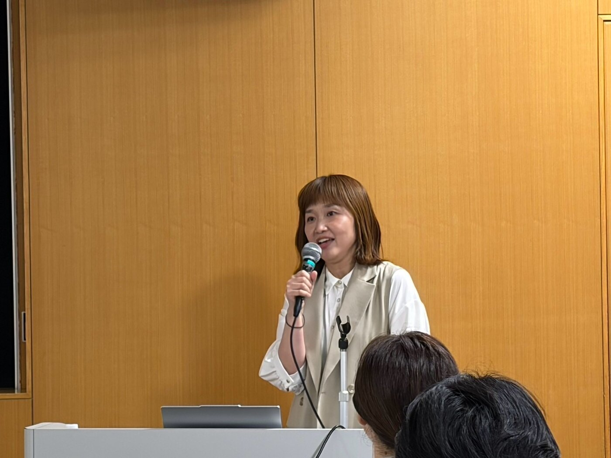
モデル・タレント事務所を15年にわたり率いてきた橋本さん。報告のはじめに語られたのは、起業の原点でした。橋本さんは 28歳のとき、深い喪失 を経験します。外に出ることさえままならなかった時期、寄せられた一通のメッセージ ―― 「あなたは人を元気にする人だ」 ―― が、再び前を向くきっかけになったといいます。目の前の人を笑顔にし、その「ありがとう」に自分こそが支えられてきた。その気づきを胸に、29歳の誕生日に「幸せの運び人になろう」と志を定め、事業を届け出ました。
走りながら学んだ組織づくりの日々。当初は社員にマネゼミを受けさせるつもりが、先輩の一言で自らも共に受講することになり、「"こうあるべき"という鎧を脱ぎ、本当の自分をさらけ出せた」と振り返ります。福岡支店の開設と拡大、コロナ禍での組織の見直しを経て、現在はフラットな体制へ。当日は、AIを使って自分の生い立ちや志を言語化し客観視するワークにも、会場全員で挑戦しました。
SNSの時代、選ばれるのは会社ではなく「人」。だからこそ、飾らない生き様を見せていくことが問われる ―― そう語った橋本さんは、会場に一つの宿題を残しました。「あなたが人生を終えるとき、どんな人でありたいですか」。それぞれが自分に問い直す、静かな時間となりました。
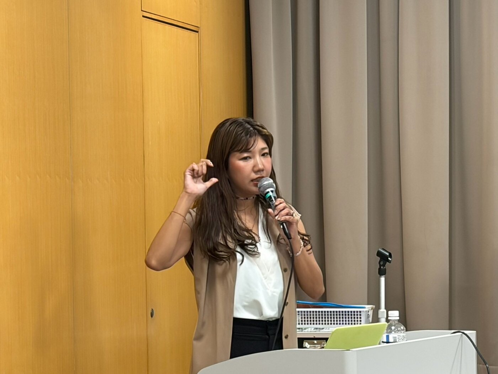
報告のあとには、それぞれの質疑応答の時間も。とりわけ、同じ期をともに過ごした仲間からの言葉には、当日の会場をあたためる温度がありました。
中村さんの報告には、13期の同期から声が上がりました。冒頭の絵本『クレヨンのくろくん』を受けて ―― 「黒はほかの色を消してしまう印象で、みんなが恐れていた。それが一転、シャープペンのひと工夫で花火になり、全員が生かされた。自分が苦手だ、邪魔だと思っている相手でも、考え方ひとつで大きく生かすことができる」。また別の同期からは、「会社で悩んでいることが、子どもたちの世界とほとんど変わらないと感じた。会社でも取り入れてみたいことがたくさんあった」との感想も。
橋本さんの報告にも、旧知のOBから質問が寄せられました。「橋本さんはいつも明るく、元気で、キラキラしている。その前向きさの根っこには、いつも何を大切にしているのか」。橋本さんは 「切り替えは、自分の理念。こう生きると決めているから、ぶれない」 と答え、幼い頃、姉を誘って自転車で遠くまで“冒険”に出かけた思い出を、行動力の原点として振り返りました。
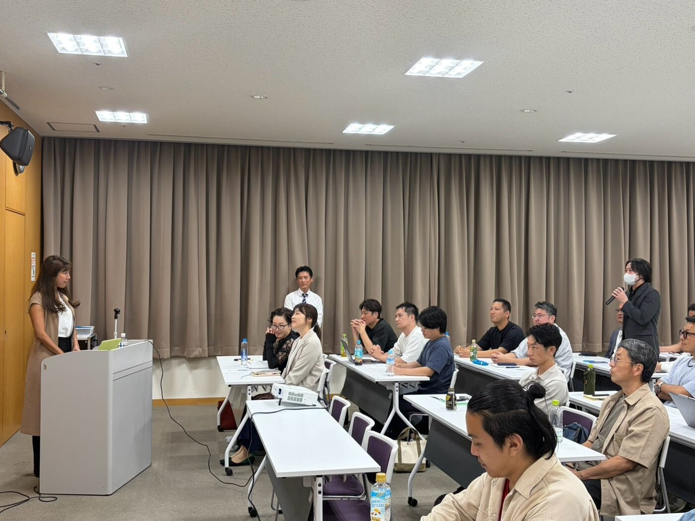
締めくくりに、松尾 孝 校長よりお言葉をいただきました。おふたりの報告には、いずれも「志」という揺るがぬ軸があった、と。そして、多くのOBがうなずいたのが次の一節です。
マネゼミの学びは、卒業して終わるものではなく、繰り返し立ち戻りながら育てていくもの ―― おふたりの歩みが、その何よりの証しとなった夜でした。
本年12月のOB例会は、テーマを 「ビジネス交流」 に据えて企画を進めております。志心の会の目的のひとつである「OB・OG同士のビジネス交流への寄与」に正面から取り組む回です。メイン登壇に加え、ご参加の皆さまそれぞれによる自社紹介の時間も設ける予定です。
当日ご参加いただいた皆さま、そして遠方より心を寄せてくださった皆さま、ありがとうございました。ご感想・ご要望、次回登壇のご意向などは、志心の会 OB例会 企画チーム（佐々木・中村・新町・清田）まで、公式LINEよりお気軽にお寄せください。
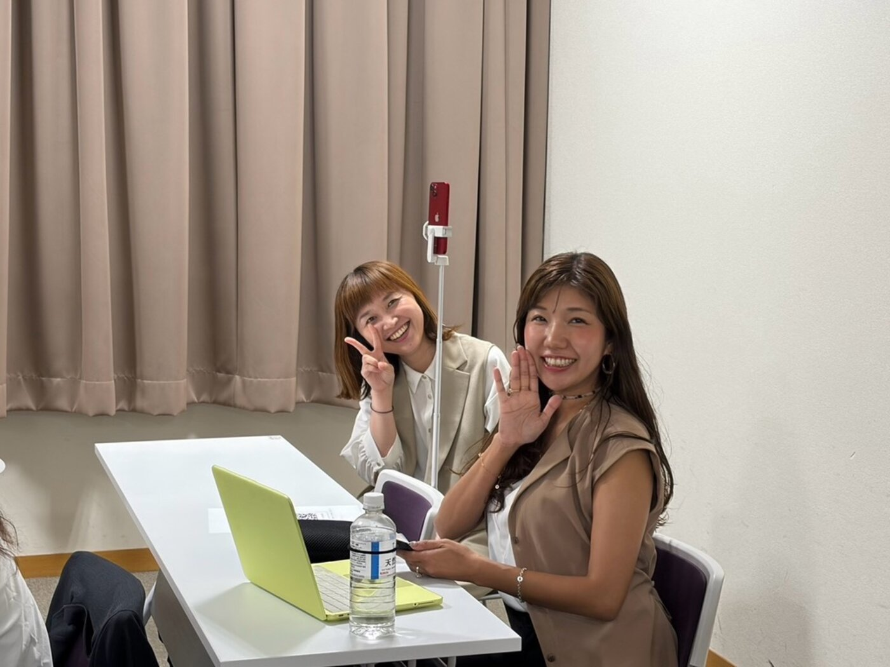
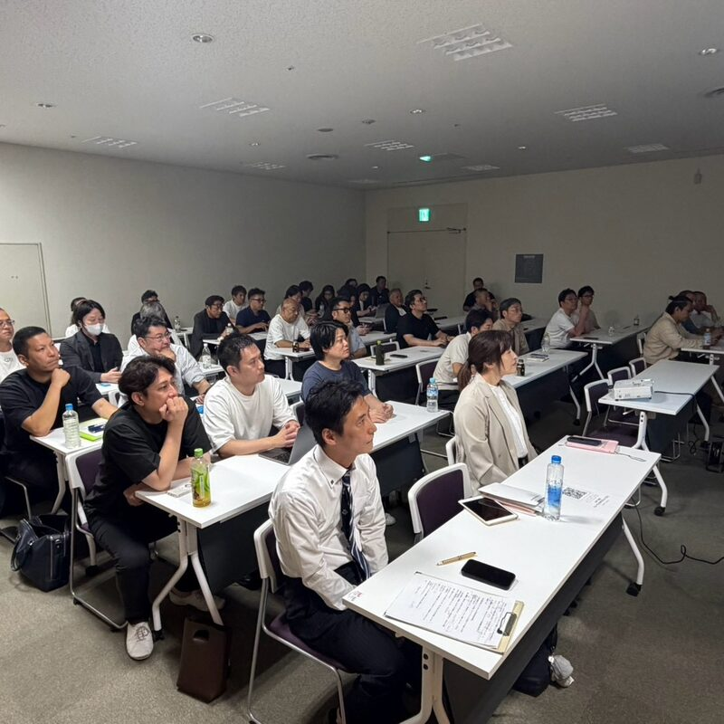
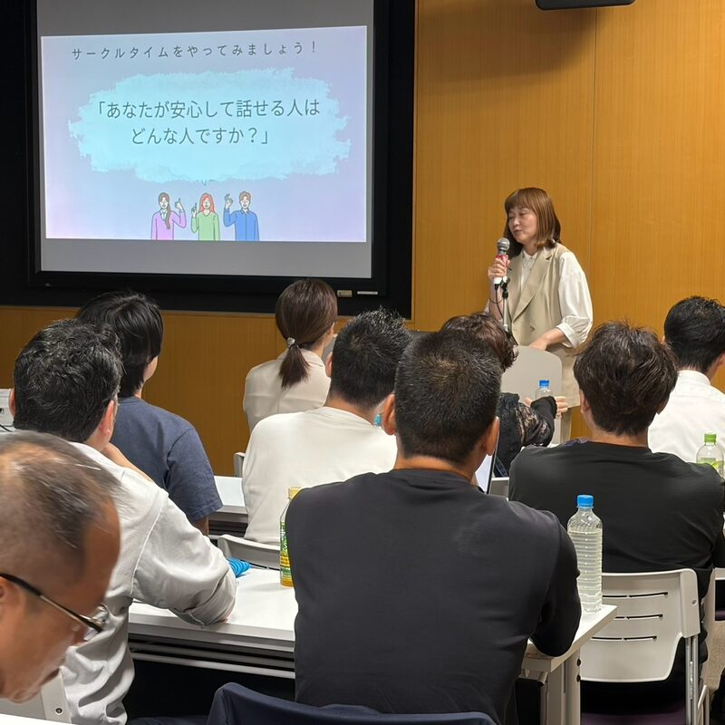
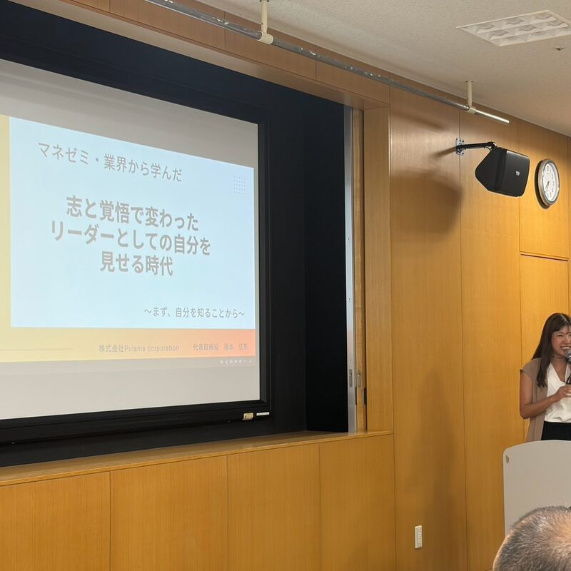
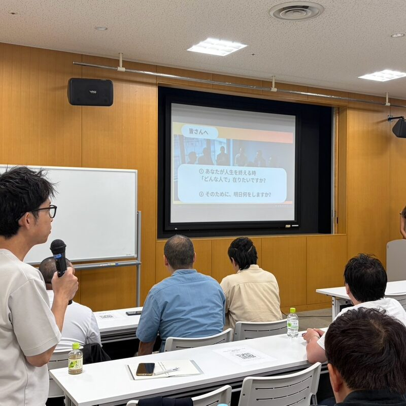
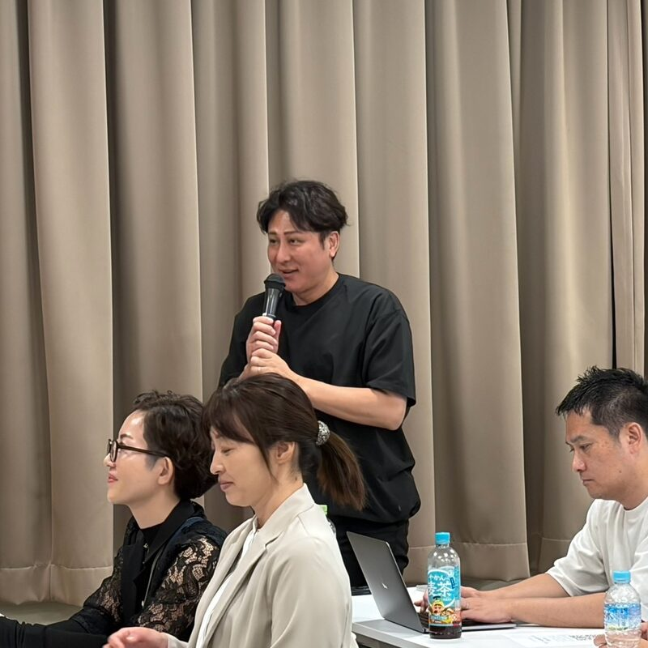
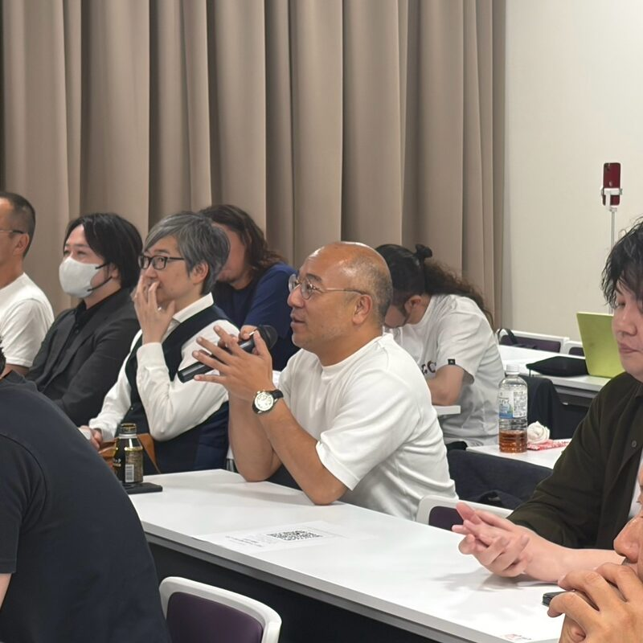
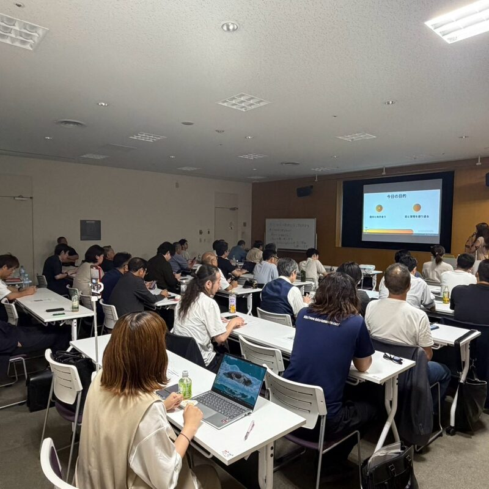
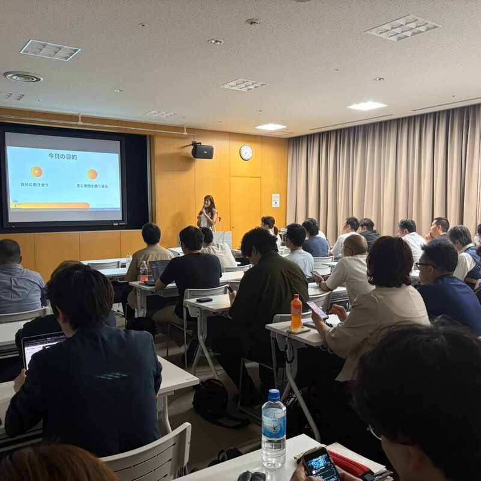
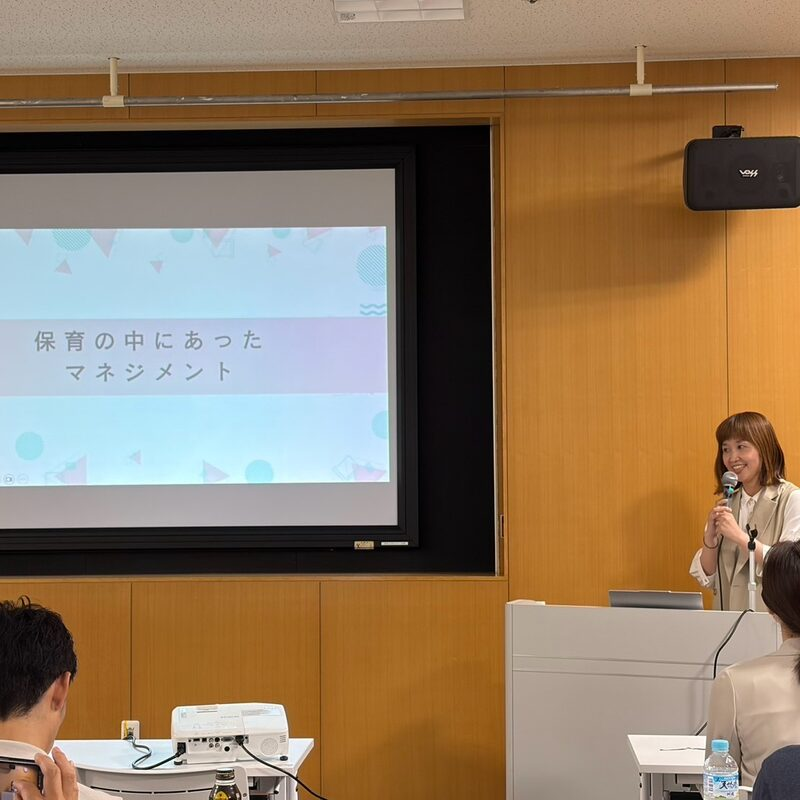
それぞれの現場で志を育て続けるOB・OGの姿に、多くの気づきをいただいた一夜でした。
次は12月、また皆さまとお会いできますことを、企画チーム一同、心より楽しみにしております。